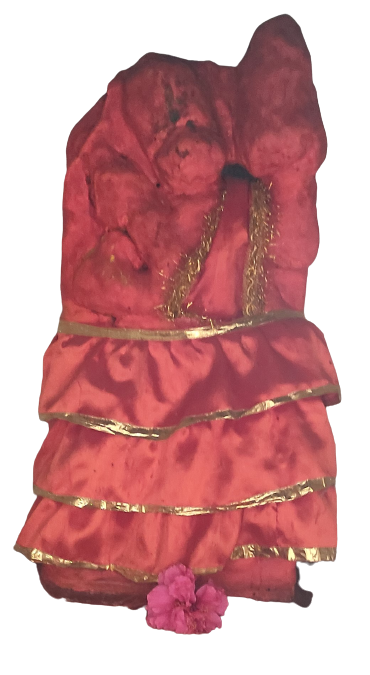
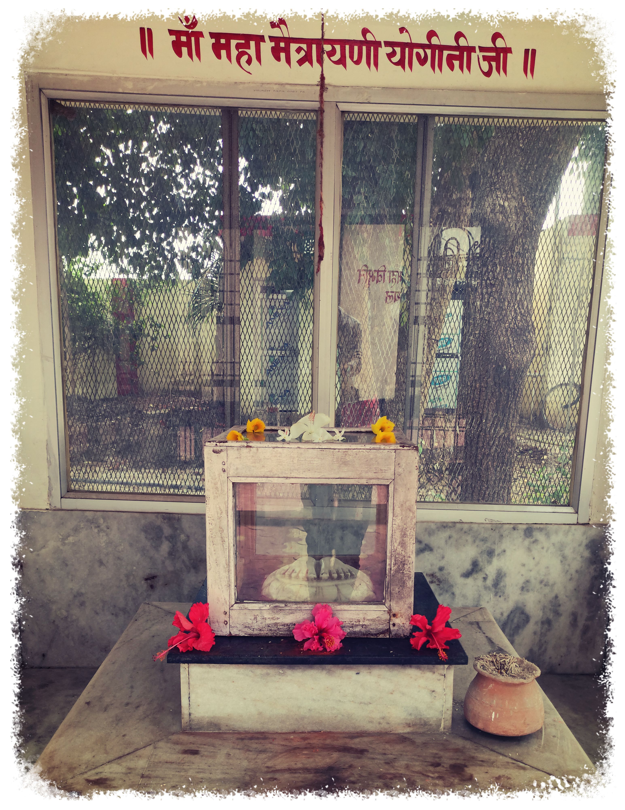
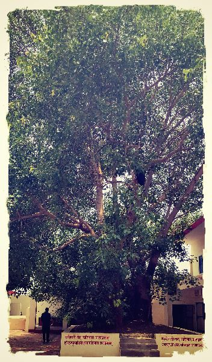
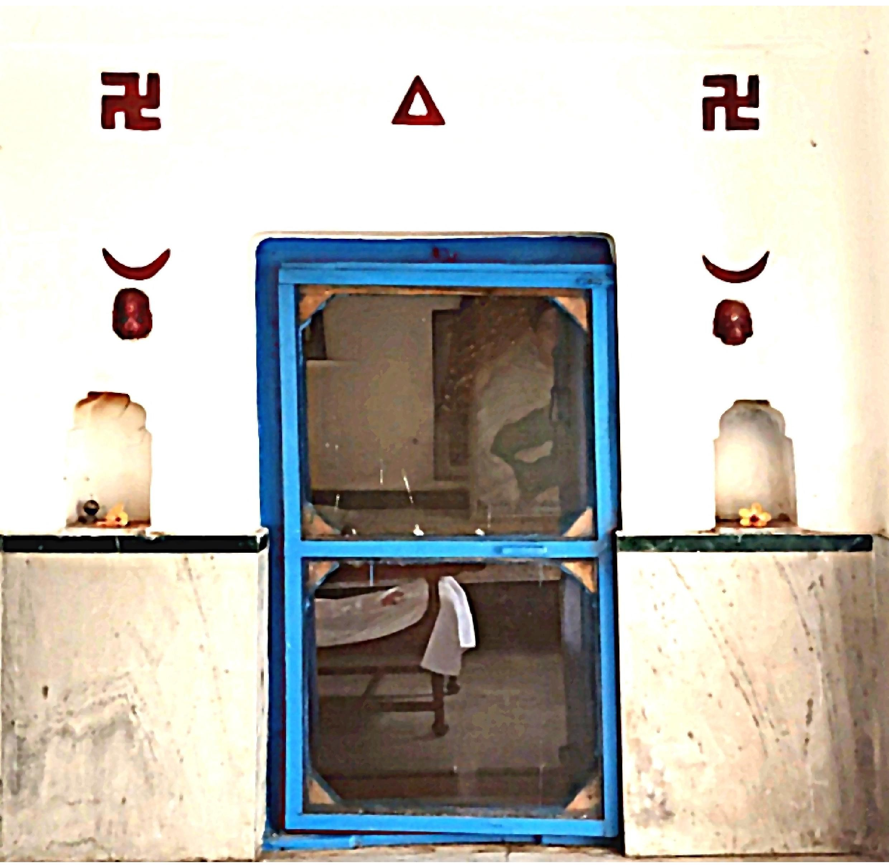

श्री हनुमान जी

परम पूज्य अघोरेश्वर भगवान राम जी के प्रारम्भिक अध्यात्मिक जीवन के मान्यता के अनुसार बाबा वैष्णवी के आराधक थे।
जब अघोरेश्वर महाप्रभु अवघुत भगवान राम जी ने चंदौली
जिले के हरिहरपुर नामक गाँव में अपने प्रथम आऋम स्थापित कि तो वैष्णवमठ तथा
अघोरमठ दोनों अघ्यात्मिक मान्यतावो
को एक साथ स्थापित किये जहाँ पर वैष्णव तथा अघोर दोनों तरह के शर्द्धालु व भक्तगण आते हैं।
पूजा-पाठ दर्शन करने के उपरांत सुख शान्ति की अनुभूति करते हैं परम पूज्य अघोरेश्वर
महाप्रभु ने माता वैष्णवी तथा हनुमान जी कि प्रतिमा को स्थापित किये जहाँ आज भी
भक्तगण व शर्द्धालु तथा शिष्यगण दर्शन व पूजा-पाठ करने आते हैं और जो भी भक्तगण व
शिष्यगण सच्चे मन से मानते है उनकी सारी मनोकामनाये पूर्ण होती हैं।।।
श्रीगुरु चरन सरोज रज, निज मनु मुकुरु सुधारि।
बरनऊं रघुबर बिमल जसु, जो दायकु फल चारि।।
बुद्धिहीन तनु जानिके, सुमिरौं पवन-कुमार।
बल बुद्धि बिद्या देहु मोहिं, हरहु कलेस बिकार।।
पवन तनय संकट हरन, मंगल मूरति रूप।
राम लखन सीता सहित, हृदय बसहु सुर भूप।।

मंदिर
 पूज्य अघोरेश्वर भगवान राम जी के द्वारा स्थापित (आदि आश्रम) जो हरिहरपुर चंदौली जिले मे स्थित है इस आश्रम के प्रांगण मे अघोरेश्वर् महाप्रभु जी ने अनेक देवी देवताओं के पवित्र मंदिरों का निर्माण करवाये इन्ही मंदिरों मे से एक माँ महा मैत्रायणी जोगीनि जी का चरण पादुका कि भी मंदिर है जो बहुत ही भव्य व सुंदरता से निर्मित किया गया है मंदिर के चारो तरफ शीशे के दीवार का निर्माण किया गया है जिसकी वजह से भक्तगण व शर्द्धालु मंदिर के बाहर से भी माँ जोगीनी जी का दर्शन कर सकते हैं मंदिर के मध्य मे सगमरमर के द्वारा निर्मित माँ मैत्रायणी जोगीनी जी के चरण पादुका को स्थापित किया गया है इन्ही पूज्यनीय मंदिरों में परम पूज्य अघोरेश्वर भगवान राम जी की मूर्ति स्थापित किया गया है जो मूर्ति श्री माता जोगीनी जी के समीप स्थित है | यह मंदिर भी बहुत ही भव्य व आकर्षक के साथ निर्माण कराया गया है जो आश्रम प्रागण मे आने वाले भक्तो कि अपनी तरह आकर्षित करता है | परम पूज्य अघोरेश्वर भगवान राम जी इस आश्रम के उत्तर की ओर एक छोटा किंतु सुंदर व भव्य पांच कपलपर मां काली जी की मूर्ति से सुशोभित मंदिर की स्थापना की है मां का दर्शन करने मात्र से चित प्रसन्न हो जाता है आदि आश्रम के मंदिर प्रांगण में एक भव्य व सुंदर आरती स्थल का भी निर्माण किया गया है जिसके मुख्य व्दार पर सर्वेशवरी समूह के कलश व झंडा की आकृति का आलेखन किया गया है उसी तरफ मंदिर के प्रक्त्य प्रांगण में सर्वेश्वरी समूह के झंडे का स्थापन किया गया है जिसके चारों और रंग बिरंगे खुशबूदार पुष्पों की बागान भी लगाए गए है जो झंडे की सुंदरता को चार चांद लगा देते है और इस झंडा की शोभा को बड़ा देते है।।।
कल्प वृक्ष
 अघोरेश्वर महाप्रभु अवधुत भगवान राम जी के आध्यात्मिक जीवन की उनको अनेक रहस्यमयी घटना और लीलाये है, जिनका जितना वर्णन करें उतना ही कम है। उन्ही रहस्यमयी घटनाओं में से महाप्रभु जी कि एक माया यह भी है। अघोरेश्वर महाप्रभू जी सर्वप्रथम मनिहरा गांव में श्री गणेश जी कि प्रतिमा स्थापित करने के पश्चात हरियरपुर गांव में पहुंचे है जहां पर उन्होंने अपना निवास स्थान एक बेल वृक्ष के पास बनाये। अघोरेश्वर महाप्रभु अपने तप वह साधना के क्रियओ को इसी वृक्ष के आस पास ही जागृत किये और उसी वृक्ष के समीप अपने तपस्या के लिए भूधरे का निर्माण कराये। अगर देखा जाए तो अघोरेश्वर महाप्रभु जी के द्वारा स्थापित मंदिर, इमारत तथा सभी पवित्र स्थान इसी वृक्ष के इर्द-गिर्द स्थापित है। महाप्रभु भगवान राम जी जनहित कार्य के लिए आदि आश्रम से प्रस्थान किये। महाप्रभु अपना सम्पूर्ण जीवन मानव कल्याण के हित में प्रकाशित किए। अघोरेश्वर महाप्रभु भगवान राम जी के आध्यामिक जीवन काल के अंतिम क्षणों में महाप्रभु के द्वारा इस मनुष्य रूपी शरीर का परित्याग करने के पश्चात लोगो की मान्यता यह है की आदि आश्रम में स्थित वह वृक्ष जहा पर आधोरेश्वर महाप्रभु तप व साधना में लीन रहते थे , वह वृक्ष भी अपनी जीवन के अंतिम क्षणों को व्यतीत करता प्रतीत हो रहा था और कुछ ही दिनों बाद वह वृक्ष पूरी तरह से सुख गया , कल्प वृक्ष कहा गया उस कल्प वृक्ष की लोगो में बहोत ही मान्यता है और सभी भक्तगण उस वृक्ष की पूजा पाठ करने लगे कुछ समय पश्चात उस सुखे कल्प वृक्ष से पांच वृक्ष की उत्पत्ति हुई लोगो की मान्यता है की ये पांच वृक्ष शरीर के पंचभूत तत्वो के प्रतीक है , कुछ लोगो का मानना है की ये अघोरेश्वर महाप्रभु के पांच शिष्य है मालिक कि माया मालिक ही जाने।।।
आसन

परम पूज्य अघोरेश्वर भगवान राम जी ने हरिहरपुर आश्रम जो वर्तमान में आदि आश्रम नाम से नामंकित है | जहां पर महाप्रभु अघोरेश्वर भगवान राम जी बिना समय के परवाह के अपने तप में लिन रहते थे | आज भी महाप्रभु का आसन भक्तो को अघोरेश्वर महाप्रभु की अनुभूति करावती है| आज भी अघोरेश्वर भगवान राम जी के आसन के समिप जा कर प्रभु का ध्यान व पूजा-पाठ करते हैं | परम पूज्य अघोरेश्वर के आसन के सामने दालान है, जहां पर बड़ी संख्या में लोग बैठते हैं , व प्रभु का गाथा गुणगान करते हैं| और उनके आसन की पूजा करते हैं| महाप्रभु की महिमा अपार है|प्रभु के सन्दर्भ में जीतना कहा जाय कम है|यह इस बात से प्रतित होता है की महाप्रभु अपने निवास कक्ष का निर्माण कराते समय अपने निवास के द्वार पर ब्रम्ह राक्षस को स्थापित करवाये| आदि आश्रम में परम पूज्य भगवान राम जी के स्थित पवित्र निवास स्थान के समिप ही श्री पूज्यनीय गुरुपद संभव राम जी का भी आसन स्थित है| जो सभी सर्वेश्वरी समूह शाखाओं के अध्यक्ष हैं| और परम पूज्य अघोरेश्वर अवधूत राम जी के कार्य में अग्रसर है| परम् पूज्य गुरुपद संभंव राम जी के आसन के समिप ही बाबा सावक राम जी का भी आसन स्थित है जो महा प्रभु अघोरेश्वर भगवान जी के शिष्य थे | बाबा सावक राम जी महाराज जी के उपरांत कुछ वर्षों तक आदि आश्रम में प्रभु के बतलाए कार्य मे कार्यरत थे, यह सभी आसन आदि आश्रम को और भी आकर्षण बनाते हैं।।।